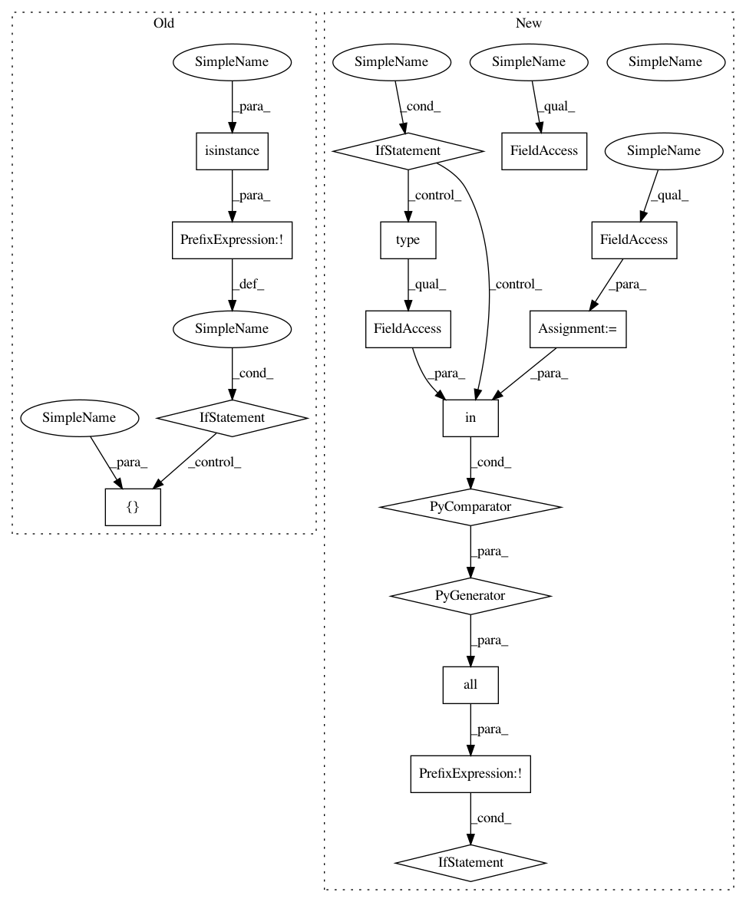

a0d0f3381d74e7b1c9dc5533065f63fcb09e1be8,art/attacks/evasion/fast_gradient.py,FastGradientMethod,__init__,#FastGradientMethod#Any#Any#Any#Any#Any#Any#Any#Any#,59
Before Change
:type minimal: `bool`
super(FastGradientMethod, self).__init__(classifier)
if not isinstance(classifier, LossGradientsMixin):
raise ClassifierError(self.__class__, [LossGradientsMixin, BaseEstimator], classifier)
kwargs = {
"norm": norm,
"eps": eps,
"eps_step": eps_step,
After Change
super(FastGradientMethod, self).__init__(estimator=estimator)
if not all(t in type(estimator).__mro__ for t in self.estimator_requirements):
raise ClassifierError(self.__class__, self.estimator_requirements, estimator)
kwargs = {
"norm": norm,
"eps": eps,
"eps_step": eps_step,
In pattern: SUPERPATTERN
Frequency: 3
Non-data size: 16
Instances
Project Name: IBM/adversarial-robustness-toolbox
Commit Name: a0d0f3381d74e7b1c9dc5533065f63fcb09e1be8
Time: 2020-03-20
Author: beat.buesser@ie.ibm.com
File Name: art/attacks/evasion/fast_gradient.py
Class Name: FastGradientMethod
Method Name: __init__
Project Name: IBM/adversarial-robustness-toolbox
Commit Name: f10c60eb403c8256c7bdde1a8b3df3a33e070070
Time: 2020-04-11
Author: beat.buesser@ie.ibm.com
File Name: art/attacks/attack.py
Class Name: Attack
Method Name: __init__
Project Name: IBM/adversarial-robustness-toolbox
Commit Name: a0d0f3381d74e7b1c9dc5533065f63fcb09e1be8
Time: 2020-03-20
Author: beat.buesser@ie.ibm.com
File Name: art/attacks/evasion/projected_gradient_descent.py
Class Name: ProjectedGradientDescent
Method Name: __init__
Project Name: IBM/adversarial-robustness-toolbox
Commit Name: a0d0f3381d74e7b1c9dc5533065f63fcb09e1be8
Time: 2020-03-20
Author: beat.buesser@ie.ibm.com
File Name: art/attacks/evasion/fast_gradient.py
Class Name: FastGradientMethod
Method Name: __init__